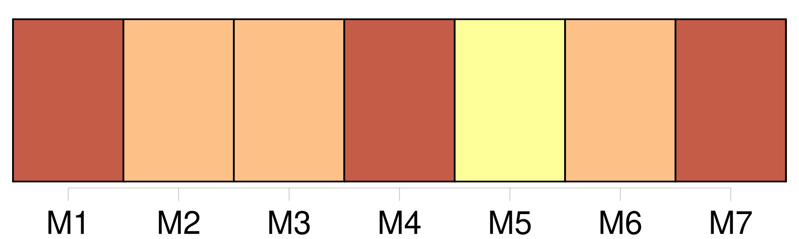
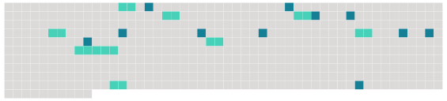

Longueur nb maillons : 19 mentions |
 |
Avant de s'en aller mourir là-bas, il avait voulu me confier [sa fille] , [qui] avait l'âge de la mienne, six ans. Il me fit promettre de [l'] élever selon sa fortune, qui était considérable, et me remit un portefeuille bien rempli. Je promis tout ce qu'il voulut, puis, lorsqu'il se fut éloigné après avoir pressé [sa fille] dans ses bras, je comptai les valeurs, sans m'occuper de [l'enfant] [qui] pleurait en appelant [son] père …… [5 phrases] Personne n'avait vu entrer [cette enfant] chez moi, je décidai de [la] faire disparaître, avant que personne ne soupçonnât [son] existence dans ma maison ……
Et [sa] fortune serait à ma fille … Je dis donc à [la petite] que j'allais [la] ramener à [son] père et je m'acheminai vers les quais, où [elle] me suivit sans résistance. [1 phrases] Je remis [l'enfant] au capitaine de ce bateau — homme au regard fuyant — et je lui remis en même temps la somme de cinq cents dollars.
Le soir même le bateau partit, et [l'enfant de mon ami] appartenait désormais au capitaine Laurent. [9 phrases] — « Alors dites -moi ce qu'est devenue [cette enfant] [3 phrases]
— « Dites -moi [son] nom », dit le prêtre en se penchant à l'oreille du malade, qui semblait épuisé. |
 |
Il est possible de télécharger la ressource sur la page Ortolang |
Si vous avez des questions ou vous voyez des erreurs, merci d'envoyer un mail à silvia.federzoni89@gmail.com |